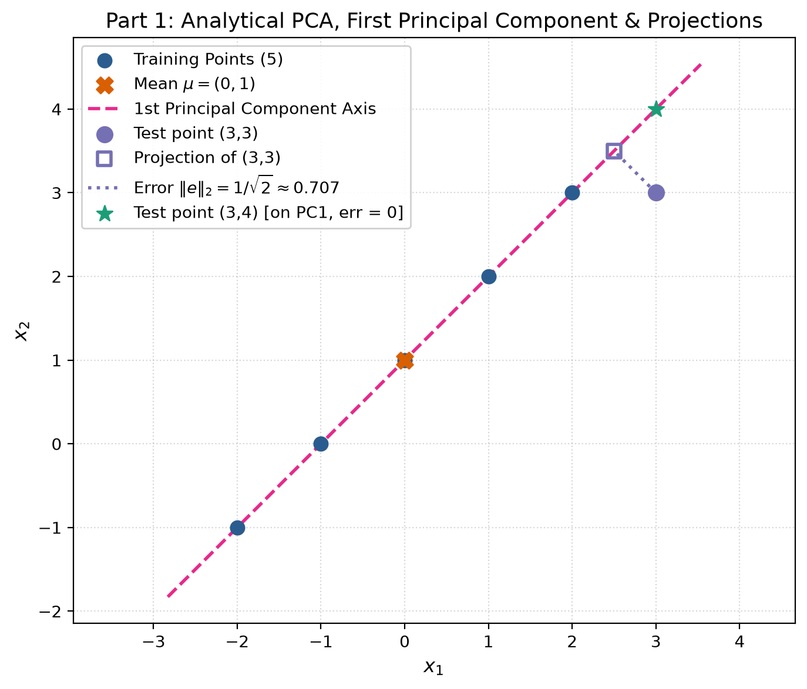
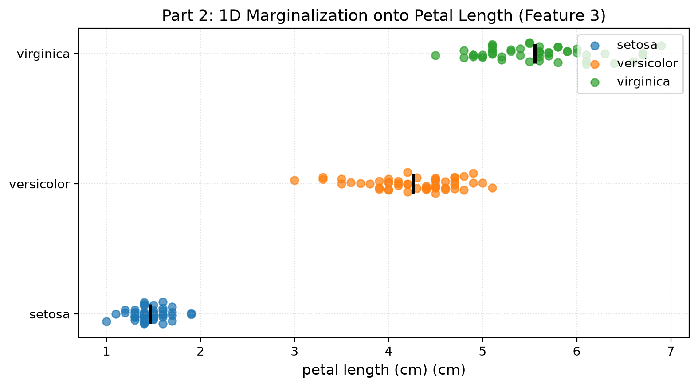
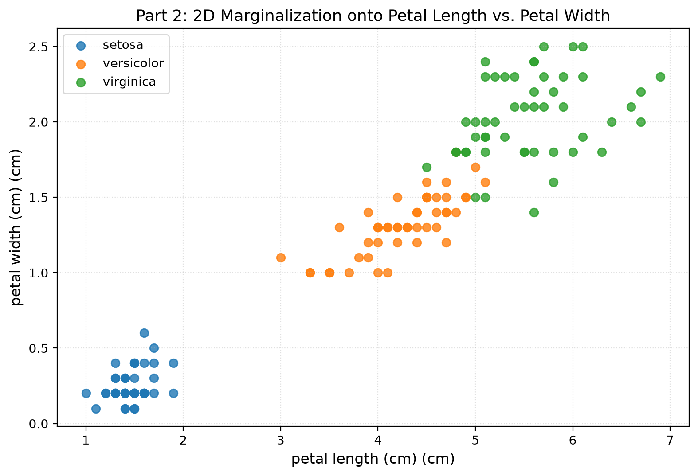
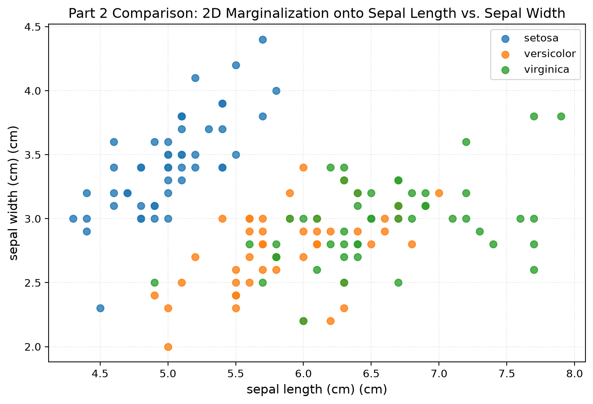
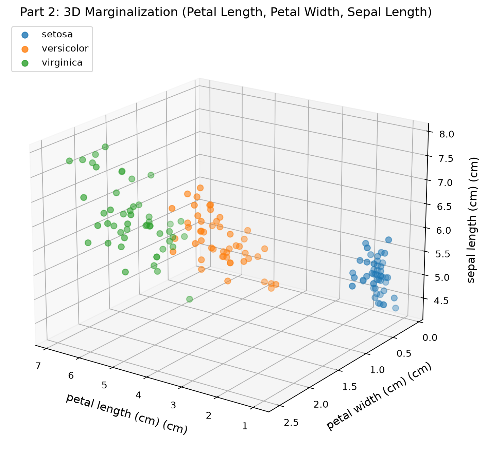
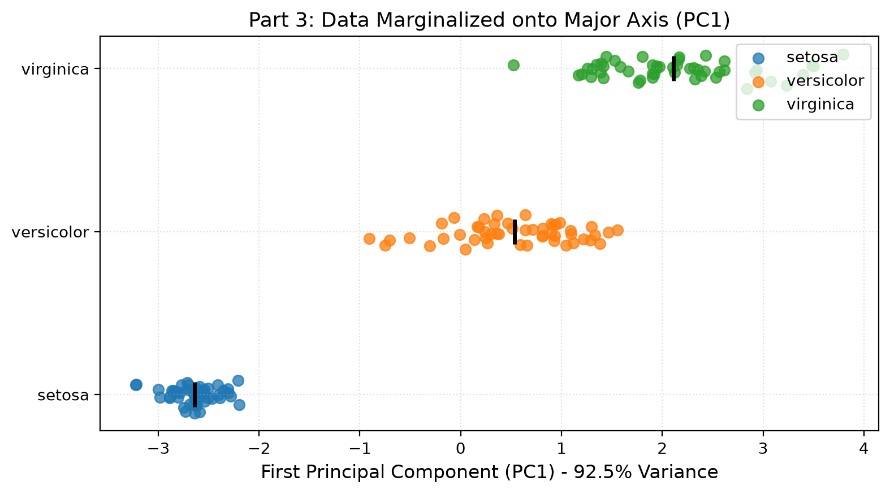
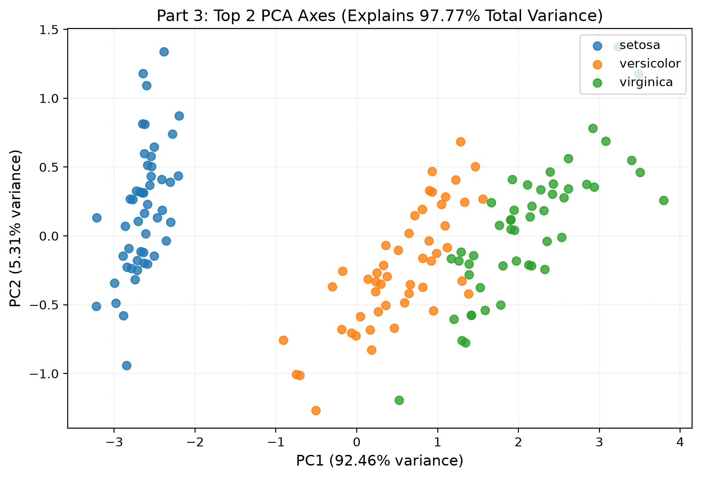
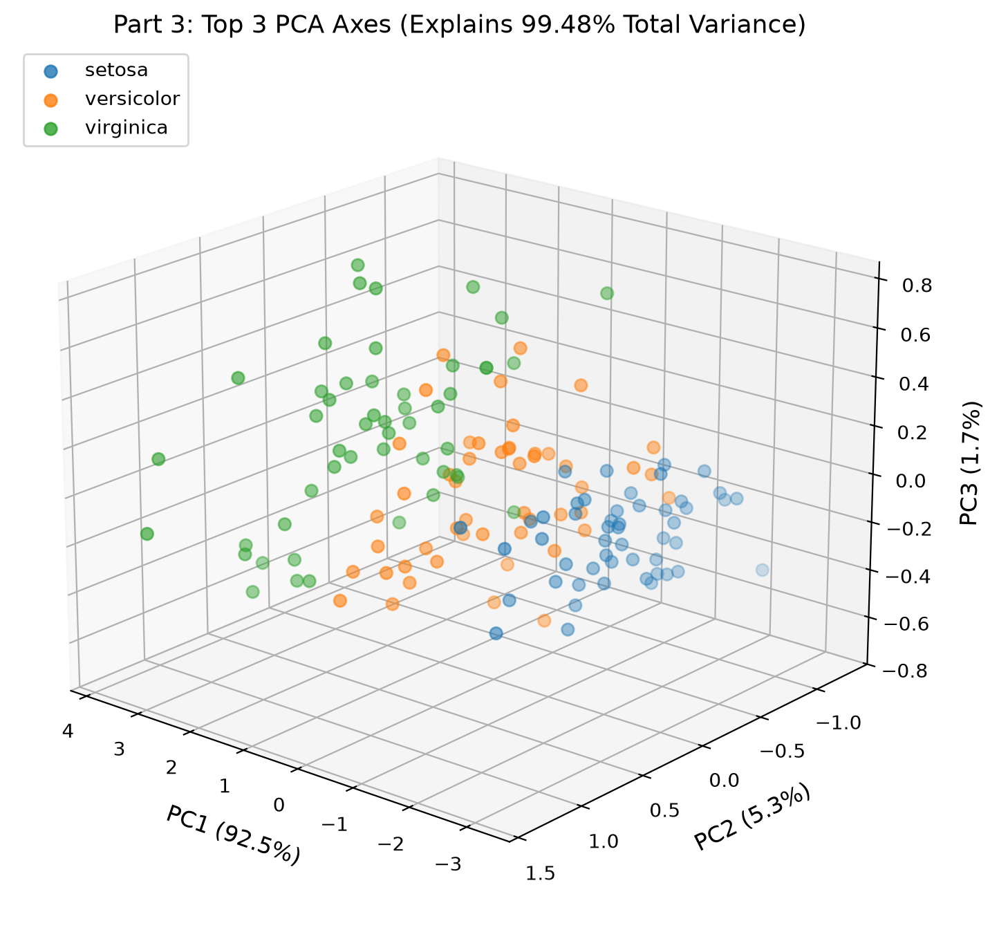

Assignment 3 — Principal Component Analysis & Non-Linear Manifolds
Consider a dataset containing 5 examples with 2 features each:
| Sample | x1 | x2 | Centered x̃1 | Centered x̃2 |
|---|---|---|---|---|
| x(1) | -2 | -1 | -2 | -2 |
| x(2) | -1 | 0 | -1 | -1 |
| x(3) | 0 | 1 | 0 | 0 |
| x(4) | 1 | 2 | 1 | 1 |
| x(5) | 2 | 3 | 2 | 2 |
The handwritten step-by-step mathematical derivation for Part 1 is displayed below:
The plot below verifies the analytical calculations: the 5 training points, the sample mean, the first principal component axis, the test point (3, 3) with its orthogonal projection and error vector, and the test point (3, 4) lying directly on the PC1 subspace.

Marginalization involves projecting the 4-dimensional Iris dataset onto a lower-dimensional coordinate subspace by selecting a subset of raw features (removing unselected feature dimensions). Below, the dataset is visualized marginalized onto 1 feature, 2 features, and 3 features.
Projecting onto Feature 3 (Petal Length) displays a strong natural split: Iris Setosa (blue) forms an isolated cluster below 2.0 cm, entirely separated from Iris Versicolor (orange, 3.0–5.1 cm) and Iris Virginica (green, 4.5–6.9 cm).

Comparing two different 2D marginalizations illustrates why feature choice determines cluster clarity:


Combining Petal Length, Petal Width, and Sepal Length creates a 3-dimensional projection. Setosa is distinctly isolated in 3D space, while Versicolor and Virginica occupy adjoining, elongated clusters with minor boundary overlap.

Question: Do any of these marginalizations highlight the classification of the dataset into nice clusters, if so, which ones? Comment.
Principal Component Analysis was performed on the Iris dataset using scikit-learn.
Unlike coordinate marginalization (which restricts data to original feature axes), PCA performs an optimal
orthogonal coordinate rotation to align the axes with the directions of maximum sample variance.
The table below provides the unit vectors wk (the eigenvectors / rows of pca.components_)
describing the four principal axes:
| Component | Sepal Length (cm) | Sepal Width (cm) | Petal Length (cm) | Petal Width (cm) | Variance (λ) | Explained Ratio |
|---|---|---|---|---|---|---|
| PC1 (Major Axis) | +0.3614 | -0.0845 | +0.8567 | +0.3583 | 4.2282 | 92.46% |
| PC2 | +0.6566 | +0.7302 | -0.1734 | -0.0755 | 0.2427 | 5.31% |
| PC3 | -0.5820 | +0.5979 | +0.0762 | +0.5458 | 0.0782 | 1.71% |
| PC4 | +0.3155 | -0.3197 | -0.4798 | +0.7537 | 0.0238 | 0.52% |
The figures below display the dataset projected onto the major axis (1D), the top 2 axes (2D), and the top 3 axes (3D):
Projecting onto PC1 alone accounts for 92.46% of all dataset variation. Setosa is completely separated on the negative side of PC1, and Versicolor and Virginica are ordered cleanly along the axis with minimal overlap.

The top 2 principal components capture 97.77% of total variance. The clusters are clearly separated, with PC1 encoding overall flower size (dominated by petal length +0.8567) and PC2 encoding sepal width/length contrast.

The top 3 axes account for 99.48% of the total dataset variance, capturing virtually all geometric structure.

In class, we discussed the analysis view of PCA: PCA finds the orthogonal projection matrix that maximizes the variance of projected points, which is mathematically equivalent to minimizing the L2 reconstruction error ||X − X̂||F2.
For a centered data matrix Xc of size N × D (where each column has zero mean):
||Xc||F2 = ∑i=1N ∑j=1D (x̃ij)2 = Tr(XcTXc) = ∑j=1D λj = (N − 1) ∑j=1D Var(xj)
For the Iris dataset (N = 150, D = 4):

Standard PCA assumes the data vary along global, linear orthogonal subspaces. When data live on a curved, non-linear manifold (where Euclidean straight-line distance through empty space is misleading), manifold learning algorithms such as ISOMAP (Isometric Feature Mapping) can be applied.
ISOMAP replaces pairwise Euclidean distances with approximate geodesic distances (shortest path lengths along a graph where edges connect only the k-nearest neighbours), and then embeds the points into 2D space using classical MultiDimensional Scaling (MDS).
Using sklearn.manifold.Isomap(n_neighbors=3, n_components=2):
from sklearn.manifold import Isomap
# Fit 2D ISOMAP embedding using 3-nearest neighbours
isomap = Isomap(n_neighbors=3, n_components=2)
X_isomap = isomap.fit_transform(X)Question: Compare the dimensionality reduction using the non linear function and PCA, which is preferable and why? Evaluate against data compression criteria or the ability to classify the data.
| Evaluation Criteria | Linear PCA | Non-Linear ISOMAP (k = 3) | Winner / Preference |
|---|---|---|---|
| Data Compression | Analytical, linear projection & decompression: Provides explicit orthogonal matrix W. Encoding is z = WT(x − μ), and decoding is x̂ = Wz + μ. Reconstruction error is mathematically minimized (||X − X̂||F2), and new data points can be compressed and decompressed instantly. | Non-parametric embedding: ISOMAP preserves pairwise graph geodesic distances, but does not provide an explicit projection matrix or exact inverse mapping. Decompressing/reconstructing raw feature coordinates requires solving an ill-posed non-linear "pre-image problem". | PCA (Far Superior) |
| Classification Discriminability | Preserves global cluster geometry: Separates Setosa completely and forms two clean, compact clusters for Versicolor and Virginica. Linear classifiers (e.g. LDA, Linear SVM) achieve >97% accuracy on the 2D PCA representation. | Graph sensitivity at k = 3: Because Setosa is far from the other species, a 3-nearest neighbour graph is actually disconnected (splits into 2 disjoint components), forcing graph completion. The resulting embedding pulls the clusters into irregular filamentary structures without improving class separation. | PCA (More Robust) |
| Computational Complexity & Out-of-Sample Mapping | O(ND2 + D3): Extremely fast covariance eigendecomposition. Compressing new points takes a single vector-matrix multiplication O(D). | O(N3): Requires finding k-NN, running all-pairs shortest paths (Dijkstra/Floyd-Warshall), and eigendecomposition of an N × N kernel matrix. Out-of-sample mapping requires graph interpolation. | PCA (Much Faster) |
Conclusion & Recommendation:
For the Iris dataset, PCA is definitively preferable over ISOMAP: